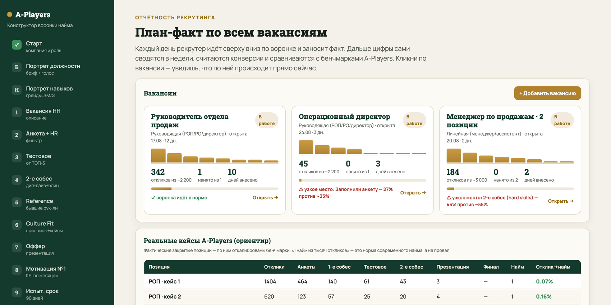
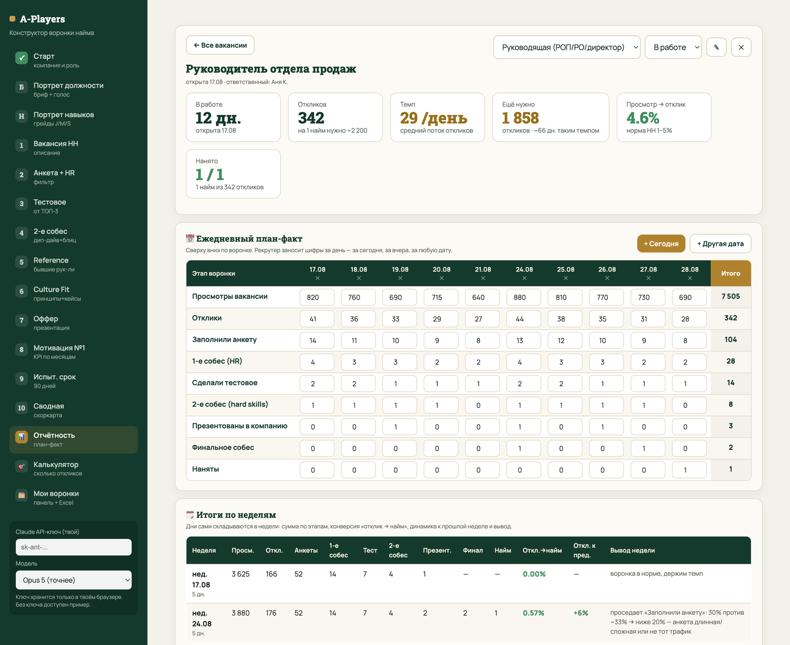

📋 Оценка кандидатов по этапам. Второй мозг забирает записи собеседований из облака Zoom, расшифровывает и выставляет балл по каждому этапу — резюме, анкета, HR, тестовое, 2-е собес, culture fit, reference. Готовые промпты — в разделе ниже, баллы переносятся в скоркарту конструктора.
Как пройти
За руку — 9 шагов
1
Получи свой ключ Claude API
Один раз: console.anthropic.com → API Keys → создай ключ (начинается на sk-ant-). Вставь его в левое поле конструктора — он сохранится только в твоём браузере.
Ключ нужен твой. В инструменте не зашит ничей чужой ключ: каждый работает на своём, оплата по факту — один прогон стоит центы.
2
Выбери позицию и зафиксируй ТОП-3 результата
Шаг «Старт»: компания, ниша, роль и три результата за первый квартал — количественно и качественно. Формулируй так, чтобы в конце квартала можно было честно ответить «случилось или нет».
Плохо: «навести порядок», «скорость». Хорошо: «дожать 4 зависших проекта до 98% готовности».
3
Заполни портрет должности — голосом
Шаг «Портрет должности»: 7 блоков, ~40 вопросов. Нажми «🎙 Диктовать блок» и наговори мысли по этой части — AI сам разнесёт по вопросам. В конце — «Уточнить пробелы».
Не пропускай три блока: ТОП-3 результата, челленджи кандидата и компании-доноры. Без них воронка получится слабее.
4
Собери портрет навыков и отметь ТОП-5
Шаг «Портрет навыков»: выбери роль из библиотеки (28 ролей) — увидишь реальные описания Junior / Middle / Senior по каждому навыку. AI порекомендует целевой грейд под твои ТОП-3. Отметь 5 критичных навыков.
Нет нужной роли — выбери «Другое», соберём портрет по аналогии с эталоном.
5
Прогони все этапы воронки
Дальше просто идёшь по шагам 1–8 и жмёшь «Собрать»: вакансия → анкета и вопросы HR → тестовое → 2-е собеседование → reference → culture fit → оффер → мотивация → испытательный срок → сводная.
Не нравится результат — «✏️ Редактировать вручную» или блок «Поправить этот раздел»: напиши или надиктуй правку, и раздел пересоберётся.
6
Собери оффер как презентацию
Шаг «Оффер» → «Собрать» → «🖨 Открыть презентацию» → Cmd/Ctrl+P → «Сохранить как PDF». Готовая дека, которую презентуешь финалисту на отдельной встрече.
Правило: оффер на управленческую позицию никогда не отправляется письмом. У сильного кандидата на руках 3–4 оффера — это твоя финальная точка продажи компании.
7
Посчитай объём в калькуляторе
Шаг «Калькулятор»: тип позиции + сколько человек нанимаем → сколько откликов нужно собрать и сколько кандидатов дойдёт до каждого этапа. Это твой план по объёму на месяц.
8
Заведи вакансию в отчётности и веди план-факт
Шаг «Отчётность» → «+ Добавить вакансию». Дальше рекрутер каждый день нажимает «+ Сегодня» и идёт сверху вниз по воронке: просмотры → отклики → анкеты → 1-е собес → тестовое → 2-е собес → презентация → финал → найм.
Дни сами складываются в недели с выводом по каждой, а накопительная воронка сравнивается с бенчмарками и подсвечивает узкое место. Кликнул по вакансии на дашборде — сразу видишь, что по ней происходит.
9
Выгрузи всё в Excel
«Мои воронки» → «⬇ Скачать всю воронку в Excel»: все этапы отдельными листами в брендированном виде. Отчётность выгружается своим файлом — дни, недели и воронка тремя листами.
Нужна вторая воронка? Там же, в «Мои воронки», нажми «💾 Сохранить текущую воронку», а потом «➕ Новая воронка» — рабочие поля очистятся под новую роль, а сохранённая останется в таблице. Вернуться к ней можно кнопкой «Открыть».
Готово: у тебя воронка найма, по которой не стыдно позвать чемпиона, и цифры, по которым видно, где она течёт.
Как вести найм каждый день
Отчётность рекрутинга: дашборд → день → неделя
Еженедельный план-факт с командой найма ускоряет процесс, калибрует бриф и вопросы и просто дисциплинирует. Веди несколько вакансий параллельно и сверяй каждую с бенчмарками.
Отчётность · план-факт по всем вакансиям

Отчётность · ежедневный план-факт по вакансии

С чем сверяться
Бенчмарки агентства A-Players
Реальные цифры по закрытым позициям, а не «средние по рынку». Просела конверсия на конкретном этапе — усиливай именно этот инструмент, а не «лей ещё откликов».
Переход воронки
Средняя CR
Что значит, если у тебя хуже
Отклик → анкета
~33%
ниже 20% — анкета длинная/сложная или не тот трафик
Анкета → 1-е собес (HR)
~28%
ниже 15% — анкета плохо квалифицирует
1-е собес → тестовое
~50%
ниже 30% — тестовое пугает объёмом или непонятно
Тестовое → 2-е собес
~55%
ниже 35% — тестовое не отделяет сильных
2-е собес → презентация
~35%
выше 60% — слабо фильтруете на hard skills
Презентация → финал
~33%
здесь уже личная химия с фаундером
Финал → найм
~20%
1 нанятый из 3–9 финалистов
Норма современного найма: 1 нанятый из 1 100–2 100 откликов на линейной позиции и из 800–4 500 — на руководящей. Это не провал, это поиск золота в реке.
Про ключ и приватность
Твой ключ — только твой
🔒 Как устроена приватность
1
Ключ Claude API вводишь в браузере. Он сохраняется локально у тебя и уходит только на api.anthropic.com по твоему ключу. Мы его не храним и не видим.
2
Все данные воронки — бриф, портрет, кандидаты, цифры отчётности — лежат в твоём браузере (localStorage). Никуда не заливаются.
3
В инструменте нет ничьих чужих ключей — каждый работает на своём. Оплата Claude по факту: сборка целой воронки стоит копейки.
Правило: ключ никому не пересылай и не вставляй в общие документы. Он нужен только тебе и только в этом инструменте.
Оценка кандидата по этапам
Второй мозг слушает все встречи и выставляет баллы за каждый этап
Вопрос со встречи: можно ли транскрибировать каждый этап и получать по нему оценку? Да — вот как. Подключаете облако Zoom ко Второму мозгу, он вытягивает записи, расшифровывает и прогоняет по промптам ниже. На выходе — балл 1–10 по каждому этапу, который вы переносите в скоркарту конструктора.
⚠️ Главное правило этих промптов
Любой промпт ниже работает только вместе с контекстом роли. Без него модель оценивает «вообще сильный человек или нет», а вам нужно «сильный под эти конкретные проекты». Поэтому к каждому промпту всегда прикрепляйте четыре вещи:
1
Портрет должностизаполненный бриф из конструктора — шаг «Портрет должности»
2
Портрет навыковсрез по грейдам J/M/S с отмеченными ТОП-5 и целевыми уровнями
3
Название должностикак она звучит у вас, а не «руководитель вообще»
4
ТОП-3 проекта на первый кварталключевые результаты, которые человек будет лидировать
Всё это выгружается из конструктора кнопкой «⬇ Скачать всю воронку в Excel» в шаге «Мои воронки». Один файл — прикрепляете его целиком, и контекст готов. В каждом промпте есть блок «Проверка вложений»: если чего-то не хватает, модель сама остановится и попросит.
Шаг А. Подключаем облако Zoom ко Второму мозгу
Не нужно ничего настраивать руками — просто дайте Второму мозгу задачу, и он проведёт вас по шагам под вашу учётку.
Промпт · подключение Zoom
Ты — мой технический ассистент. Задача: подключить моё облако Zoom, чтобы ты мог сам забирать оттуда записи и расшифровки встреч.
Проведи меня по шагам, как для человека, который делает это впервые:
1. Что именно включить в настройках Zoom, чтобы записи и транскрипты сохранялись в облако, а не только локально.
2. Где создать приложение/интеграцию в Zoom App Marketplace и какие права (scopes) выдать — минимально необходимые, ничего лишнего.
3. Какие ключи и параметры мне нужно скопировать и куда их вставить у тебя.
4. Как проверить, что подключение работает: покажи список моих последних записей.
Правила:
— Задавай по одному шагу за раз и жди, пока я подтвержу, что сделал.
— Если для шага нужен скриншот моего экрана, попроси его.
— Не проси у меня пароль от Zoom. Только ключи интеграции.
— В конце сохрани короткую инструкцию, как повторить это подключение.
Промпт · регулярный сбор записей найма
Настрой мне регулярный процесс по записям найма.
Раз в день:
1. Забирай из облака Zoom все новые записи встреч.
2. Отбирай те, что относятся к найму — по названию встречи, участникам или по моей папке [укажи название].
3. Делай расшифровку с разделением на говорящих (кто рекрутер / руководитель, кто кандидат).
4. Раскладывай в структуру: Кандидат → Этап воронки → дата → транскрипт.
5. Если из названия непонятно, кто кандидат и какой это этап — спроси у меня, не угадывай.
Этапы, по которым раскладываем: 1-е собеседование с рекрутером, 2-е собеседование с руководителем (дип-дайв + блиц), Culture Fit с фаундером, разбор тестового задания, reference check.
Когда появляется новый транскрипт — сообщи мне и спроси, запускать ли по нему оценку.
Шаг Б. Промпты оценки по каждому этапу
Прогоняете этап — получаете балл 1–10 с аргументацией и переносите его в скоркарту конструктора (шаг «Сводная»). Порядок промптов = порядок этапов воронки.
Промпт 1 · Анализ резюме
Действуй как HRBP с опытом 10+ лет в найме на позиции уровня C-1 / руководитель. Твоя задача — оценить резюме кандидата под конкретную роль, а не «вообще».
ВЛОЖЕНИЯ (обязательны):
— портрет должности (заполненный бриф)
— портрет навыков с грейдами Junior / Middle / Senior и отмеченными ТОП-5
— название должности: [впиши]
— ТОП-3 проекта на первый квартал: [впиши]
— резюме кандидата (файл или текст)
— ссылки на соцсети кандидата, если есть
ПРОВЕРКА ВЛОЖЕНИЙ: если чего-то из списка выше нет — остановись, перечисли, чего не хватает, и попроси прикрепить. Не оценивай по неполному контексту.
ЧТО СДЕЛАТЬ:
1. Сопоставь опыт кандидата с ТОП-5 навыков: по каждому напиши, на какой грейд (Junior / Middle / Senior) тянет по резюме и какая фраза в резюме это подтверждает. Если подтверждения нет — так и напиши «не подтверждено».
2. Проверь, есть ли в резюме опыт, релевантный нашим ТОП-3 проектам. Отдельно отметь, где кандидат описывает результат в цифрах, а где — только зону ответственности.
3. Красные флаги: частая смена работы без объяснения, размытые формулировки без цифр, несовпадение дат, «участвовал в» вместо «сделал», перечисление обязанностей вместо результатов.
4. Соцсети и аватарка: оцени, как человек себя предъявляет публично. Что говорит о стиле мышления, есть ли репутационные риски для компании. Если ссылок нет — напиши, что этот блок не проверен.
5. Сформулируй 5–7 вопросов, которые нужно задать именно этому кандидату на первом созвоне, чтобы закрыть пробелы.
ФОРМАТ ОТВЕТА:
— Оценка резюме: X/10 (обязательно одним числом)
— Обоснование: 3–5 предложений
— Таблица: Навык из ТОП-5 | Целевой грейд | Грейд по резюме | Подтверждение (цитата) | Разрыв
— Красные флаги: список или «не обнаружено»
— Вопросы на первый созвон: список
— Вердикт: приглашаем / приглашаем с оговорками / отказ — и одной строкой почему
Промпт 2 · Анализ ответов на анкету
Действуй как HRBP с опытом 10+ лет. Задача — оценить ответы кандидата на анкету-фильтр и решить, приглашать ли его на собеседование.
ВЛОЖЕНИЯ (обязательны):
— портрет должности (заполненный бриф)
— портрет навыков с ТОП-5 и целевыми грейдами
— название должности: [впиши]
— ТОП-3 проекта на первый квартал: [впиши]
— наша анкета с эталонами ответов (🟢 зелёный / 🟡 жёлтый / 🔴 красный) — лист «Анкета + вопросы HR» из воронки
— ответы кандидата на анкету
ПРОВЕРКА ВЛОЖЕНИЙ: чего-то нет — остановись и попроси. Особенно важна анкета с эталонами: без неё тебе не с чем сравнивать.
ЧТО СДЕЛАТЬ:
1. По каждому вопросу анкеты определи цвет ответа кандидата (🟢/🟡/🔴) строго по нашим эталонам, а не по своему представлению.
2. Отдельно проверь вопросы «красный флаг»: если хотя бы по одному ответ красный — это автоматический отказ, так и напиши.
3. Оцени содержательность: отвечает по существу с примерами и цифрами или общими словами.
4. Сопоставь ответы с ТОП-5 навыков: что уже подтвердилось, что осталось непроверенным.
5. Дай рекрутеру 3–5 уточняющих вопросов по жёлтым ответам.
ФОРМАТ ОТВЕТА:
— Оценка анкеты: X/10
— Таблица: Вопрос | Ответ кандидата (кратко) | Цвет | Почему такой цвет
— Красные флаги: есть / нет, и какие
— Что осталось непроверенным из ТОП-5
— Уточняющие вопросы для рекрутера
— Вердикт: приглашаем на собеседование / отказ без созвона
Промпт 3 · Первое собеседование с рекрутером (HR)
Действуй как HRBP с опытом 10+ лет. Оцени первое собеседование кандидата с рекрутером по транскрипту записи.
ВЛОЖЕНИЯ (обязательны):
— портрет должности (заполненный бриф)
— портрет навыков с ТОП-5 и целевыми грейдами
— название должности: [впиши]
— ТОП-3 проекта на первый квартал: [впиши]
— наш список вопросов HR с пометками «что хотим услышать / красный флаг»
— транскрипт собеседования с разделением на говорящих
— ответы кандидата на анкету (если есть)
ПРОВЕРКА ВЛОЖЕНИЙ: чего-то нет — остановись и попроси.
ЦЕЛИ ЭТАПА (по ним и оценивай): проверка на адекватность · сбор первичных сведений · ранний отсев · первичная продажа компании.
ЧТО СДЕЛАТЬ:
1. Пройди по нашему списку вопросов: какие рекрутер задал, какие пропустил, что кандидат ответил. Оцени каждый ответ как зелёный / жёлтый / красный по нашим пометкам.
2. Оцени кандидата по ТОП-5 навыков: по каждому — на какой грейд тянет по этому разговору, с прямой цитатой из транскрипта. Нет сигнала — пиши «не проверялось на этом этапе».
3. Мотивация: почему уходит с прошлого места, что ищет, чего избегает, какие ожидания по деньгам и формату. Отдельно отметь противоречия внутри разговора.
4. Определи DISC-профиль (D / I / S / C, какой ярче) и стиль мышления (системный / интуитивный / процессный / результативный) — с цитатами.
5. Оцени работу рекрутера: продал ли компанию, дал ли контекст про наши результаты и планы, не «допрашивал» ли. Дай 2–3 рекомендации.
6. 3 сильные стороны, 3 ключевых риска найма, 2–3 возможности «сверх ожиданий».
ФОРМАТ ОТВЕТА:
— Оценка кандидата на этапе HR: X/10
— Обоснование с 3–5 цитатами из транскрипта
— Таблица: Навык из ТОП-5 | Целевой грейд | Что показал | Цитата | Оценка
— DISC и стиль мышления
— Сильные стороны / риски / возможности
— Что обязательно проверить на следующем этапе
— Обратная связь рекрутеру
— Вердикт: двигаем дальше / отказ
Промпт 4 · Проверка тестового задания
Действуй как нанимающий руководитель на эту роль с опытом 10+ лет. Оцени выполненное тестовое задание строго по нашей рубрике.
ВЛОЖЕНИЯ (обязательны):
— портрет должности (заполненный бриф)
— портрет навыков с ТОП-5 и целевыми грейдами
— название должности: [впиши]
— ТОП-3 проекта на первый квартал: [впиши]
— текст нашего тестового задания вместе с рубрикой оценки (Senior / Middle / ниже Middle)
— работа кандидата
— «почерк пера»: присланные кандидатом регламенты и отчёты, если просили
ПРОВЕРКА ВЛОЖЕНИЙ: чего-то нет — остановись и попроси. Без рубрики не оценивай: оценка «на глаз» здесь бесполезна.
ГЛАВНЫЙ КРИТЕРИЙ: по этой работе мы должны понять, справится ли человек с нашими ТОП-3 проектами за первый квартал. Не «красиво ли оформлено», а «вытащит или нет».
ЧТО СДЕЛАТЬ:
1. По каждому блоку тестового поставь уровень по рубрике (Senior / Middle / ниже Middle) и объясни, что именно в работе на это указывает.
2. Отдельно проверь глубину: есть ли логика и расчёты или только выводы; опирается ли на данные; видит ли риски и ограничения; предлагает ли следующий шаг.
3. Признаки работы «через нейросеть без понимания»: общие формулировки без привязки к нашим вводным, отсутствие цифр, шаблонная структура, невозможность объяснить «почему именно так». Перечисли, что нашёл.
4. Если приложен «почерк пера» — оцени архитектуру управления: есть ли опережающие показатели или только запаздывающие; есть ли плановые значения и отклонения; есть ли светофор и точки контроля.
5. Сформулируй 5–7 вопросов по этой работе для разбора на втором собеседовании — такие, чтобы стало видно, сам ли делал.
ФОРМАТ ОТВЕТА:
— Оценка тестового: X/10
— Таблица: Блок задания | Уровень по рубрике | Что показал | Что упустил
— Соответствие ТОП-3 проектам: справится / справится с поддержкой / не справится — с обоснованием
— Признаки «сделано ИИ без понимания»: список или «не обнаружено»
— Разбор «почерка пера» (если приложен)
— Вопросы на разбор тестового
— Вердикт: двигаем дальше / отказ
Промпт 5 · Второе собеседование с руководителем (дип-дайв + блиц)
Действуй как нанимающий руководитель с опытом 10+ лет. Оцени второе собеседование по транскрипту. Это ключевой этап воронки — здесь решается, обладает человек компетенциями или нет.
ВЛОЖЕНИЯ (обязательны):
— портрет должности (заполненный бриф)
— портрет навыков с ТОП-5 и целевыми грейдами
— название должности: [впиши]
— ТОП-3 проекта на первый квартал: [впиши]
— наши вопросы второго собеседования: дип-дайв + блиц с эталонами ответов (🟢 сильный ответ / 🔴 красный флаг)
— транскрипт с разделением на говорящих
— работа кандидата по тестовому, если разбирали её на встрече
ПРОВЕРКА ВЛОЖЕНИЙ: чего-то нет — остановись и попроси.
ЧАСТЬ 1. ДИП-ДАЙВ. Задача — понять, сделал ли кандидат свой топ-результат сам или «стоял рядом».
1. Выпиши результат, который кандидат назвал, и что конкретно он говорит о своей роли в нём.
2. Проверь глубину по маркерам: называет ли конкретные гипотезы и почему их отобрали; описывает ли состав рабочей группы и роли; знает ли плановые значения и отклонения; помнит ли метрики и точки контроля; может ли объяснить, что делал, когда не получалось.
3. Отметь места, где кандидат уходит в общие слова, перескакивает на «мы» вместо «я», или начинает защищаться / раздражаться / зависать при углубляющих вопросах (треугольник Карпмана). Дай цитаты.
4. Вывод: результат сделан самостоятельно / в составе команды с реальным вкладом / приписан.
ЧАСТЬ 2. БЛИЦ. Задача — проверить hard skills без рассуждений.
5. По каждому вопросу блица сравни ответ кандидата с нашими эталонами: сколько вариантов назвал, насколько они рабочие, владеет ли терминологией. Отметь «поплыл» — где путается или уходит в философию вместо ответа.
6. По каждому из ТОП-5 навыков поставь фактический грейд (Junior / Middle / Senior) на основе этой встречи и сравни с целевым.
ФОРМАТ ОТВЕТА:
— Оценка второго собеседования: X/10
— Дип-дайв: вывод + 5 цитат-доказательств
— Таблица блица: Вопрос | Ответ кандидата | Эталон | Оценка
— Таблица навыков: Навык из ТОП-5 | Целевой грейд | Фактический | Разрыв | Цитата
— Признаки подсказок в реальном времени (длинные паузы перед ответом, неестественно структурированная речь, ответ не по заданному вопросу): список или «не обнаружено»
— Справится ли с ТОП-3 проектами: да / да с поддержкой / нет
— Вердикт: двигаем на Culture Fit / отказ
Промпт 6 · Culture Fit с фаундером
Действуй как опытный фаундер и HRBP. Оцени финальное собеседование на культурное соответствие по транскрипту.
ВЛОЖЕНИЯ (обязательны):
— портрет должности (заполненный бриф)
— портрет навыков с ТОП-5
— название должности: [впиши]
— ТОП-3 проекта на первый квартал: [впиши]
— принципы работы в нашей компании (5–7 сформулированных принципов)
— наши бизнес-кейсы Culture Fit с эталонами (🟢 сильное решение / 🔴 слабое решение)
— транскрипт встречи с разделением на говорящих
ПРОВЕРКА ВЛОЖЕНИЙ: чего-то нет — остановись и попроси. Особенно принципы компании: без них culture fit оценить нечем.
ГЛАВНЫЙ ВОПРОС ЭТАПА: готовы ли мы с этим человеком не просто работать, а СПРАВЛЯТЬСЯ вместе следующие 2–3 года — когда надо дожимать результат, выкручивать требовательность и проходить через просадку.
ЧТО СДЕЛАТЬ:
1. По каждому нашему принципу определи: подтверждается / противоречит / не проявился. Дай цитату.
2. По каждому бизнес-кейсу сравни решение кандидата с нашими эталонами. Отметь, на что человек опирается: на людей, на процесс, на цифры, на свой авторитет.
3. Отношение к требовательности и обратной связи: как реагирует на неудобные вопросы, признаёт ли ошибки, как описывает конфликты с прошлыми руководителями и командой.
4. Токсичность — отдельным блоком: обесценивание коллег, «это не моя зона ответственности», перекладывание вины, снисходительный тон. Цитаты обязательны.
5. AI-first: понимает ли ценность нейросетей в своей работе, готов ли учиться.
6. Что даст человек среде команды: усилит или будет вытягивать энергию.
ФОРМАТ ОТВЕТА:
— Оценка Culture Fit: X/10
— Таблица: Принцип компании | Подтверждается / противоречит / не проявился | Цитата
— Разбор бизнес-кейсов: Кейс | Решение кандидата | Ближе к 🟢 или 🔴 | Почему
— Токсичность: сигналы или «не обнаружено»
— Ответ на главный вопрос: готовы справляться вместе 2–3 года — да / нет — и почему
— Вердикт: оффер / отказ
Промпт 7 · Reference check (сбор обратной связи)
Действуй как HRBP с опытом 10+ лет. Оцени собранную обратную связь от бывших руководителей кандидата.
ВЛОЖЕНИЯ (обязательны):
— портрет должности (заполненный бриф)
— портрет навыков с ТОП-5
— название должности: [впиши]
— ТОП-3 проекта на первый квартал: [впиши]
— наши вопросы reference check с пометками зелёный / жёлтый / красный
— транскрипты или записи разговоров с бывшими руководителями (минимум 2, из разных компаний)
— что кандидат сам говорил о своей зоне ответственности и результатах (транскрипты предыдущих этапов)
— ответы кандидата на калибровочные вопросы: какую оценку 1–10 поставил бы прошлый руководитель и нанял бы он его снова
ПРОВЕРКА ВЛОЖЕНИЙ: чего-то нет — остановись и попроси. Если контакт всего один — предупреди, что одного отзыва недостаточно: нужно минимум 2–3 из разных компаний.
ЧТО СДЕЛАТЬ:
1. Сопоставь зону ответственности и результаты по версии кандидата и по версии руководителей. Все расхождения — отдельным списком с обеими цитатами.
2. Калибровка: сравни оценку, которую кандидат себе предсказал, с реальной оценкой руководителя. Разрыв в 3+ балла — серьёзный сигнал, так и отметь.
3. Ключевой вопрос: нанял бы снова? Разбери формулировку ответа, а не только «да/нет» — паузы и оговорки важнее слов.
4. Поведение в стрессе и в конфликтах, работа с командой, признаки токсичности.
5. Проверь, не выглядят ли контакты подставными: слишком гладкие ответы, незнание деталей работы, нежелание называть конкретные проекты.
ФОРМАТ ОТВЕТА:
— Оценка reference check: X/10
— Таблица: Тема | Версия кандидата | Версия руководителя | Совпадает / расходится
— Калибровка самооценки: предсказал X, получил Y, разрыв Z
— «Нанял бы снова»: ответ каждого руководителя + как он это сказал
— Красные флаги: список или «не обнаружено»
— Вердикт: подтверждено / есть вопросы / отказ
Шаг В. Итоговое резюме по кандидату
Когда пройдены все этапы — собираете одну финальную оценку и переносите баллы в скоркарту конструктора.
Промпт 8 · Финальное решение по кандидату
Действуй как HRBP и нанимающий руководитель одновременно. Собери финальное решение по кандидату на основе всех этапов воронки.
ВЛОЖЕНИЯ (обязательны):
— портрет должности (заполненный бриф)
— портрет навыков с ТОП-5 и целевыми грейдами
— название должности: [впиши]
— ТОП-3 проекта на первый квартал: [впиши]
— все твои предыдущие оценки по этому кандидату: резюме, анкета, HR-собес, тестовое, 2-е собес, Culture Fit, reference check
ПРОВЕРКА ВЛОЖЕНИЙ: если каких-то этапов нет — перечисли, какие отсутствуют, и укажи, что решение принимается на неполных данных. Не додумывай отсутствующие оценки.
ЧТО СДЕЛАТЬ:
1. Сведи все баллы в одну таблицу и посчитай средний. Отдельно выдели этапы с оценкой 4 и ниже — это стоп-факторы.
2. По каждому из ТОП-5 навыков дай итоговый фактический грейд и сравни с целевым. Покажи, где разрыв и чем его можно закрыть на испытательном сроке, а где закрыть нельзя.
3. Ответь прямо: справится ли человек с нашими ТОП-3 проектами за первый квартал. Отдельно по каждому проекту.
4. Три главные сильные стороны и три главных риска найма — с указанием, на каком этапе это проявилось.
5. Если берём: что заложить в систему мотивации №1 и в план первых 90 дней, чтобы закрыть выявленные разрывы. Каких ошибок ждать и как их предупредить.
6. Если не берём: что именно стало решающим и что усилить в воронке, чтобы такие кандидаты отсеивались раньше.
ВАЖНО: не смягчай выводы. Если данные противоречивы — так и напиши. Компромисс при найме — это не компромисс, это сигнал «не бери».
ФОРМАТ ОТВЕТА:
— Итоговая таблица: Этап | Балл | Ключевой вывод
— Средний балл и стоп-факторы
— Таблица навыков: Навык | Целевой грейд | Фактический | Разрыв | Закрывается на испытательном? да/нет
— Справится с ТОП-3 проектами: по каждому отдельно
— 3 сильные стороны / 3 риска
— Рекомендация: оффер / оффер с условиями / в резерв / отказ — и одной строкой почему
— Если оффер: что заложить в мотивацию №1 и первые 90 дней
Куда переносить баллы: откройте конструктор → шаг «10 · Сводная» → «+ Кандидат» и проставьте оценки, которые выдал Второй мозг по каждому этапу. Сумма, средний балл, вердикт и short-list ТОП-3 посчитаются сами, а скоркарту можно выгрузить в Excel.
📋 Открыть скоркарту
Что сдать
Критерии готовности
Чек-лист
Выбрана ключевая позиция и зафиксированы ТОП-3 результата за квартал
Заполнен портрет должности (все блоки брифа, включая челленджи и компании-доноры)
Собран портрет навыков, отмечены ТОП-5 навыков с целевыми грейдами
Готова вакансия для HH: вилка, крючок в первом абзаце, цифры, CTA с фильтром
Собрана анкета-фильтр с вопросом «красный флаг» и вопросы HR
Тестовое привязано к ТОП-3 и имеет рубрику оценки
Готовы дип-дайв и блиц-опрос с эталонами ответов
Есть вопросы reference check и бизнес-кейсы Culture Fit
Собрана оффер-презентация и сохранена в PDF
Вся воронка выгружена одним Excel
Заведена вакансия в «Отчётности» и внесён хотя бы один день план-факта
Подключено облако Zoom ко Второму мозгу, промпты оценки этапов сохранены
Заполнена скоркарта: баллы 1–10 по этапам, виден short-list ТОП-3
Главная задача: напиши, кого конкретно ты сейчас нанимаешь, и пришли ссылку на собранную воронку найма. Александр посмотрит вопросы, портрет, тестовое и даст обратную связь.
🔑 Для работы нужен свой ключ Claude API (console.anthropic.com → API Keys) — оплата по факту, ключ хранится только у тебя. Дедлайн — до следующей встречи.